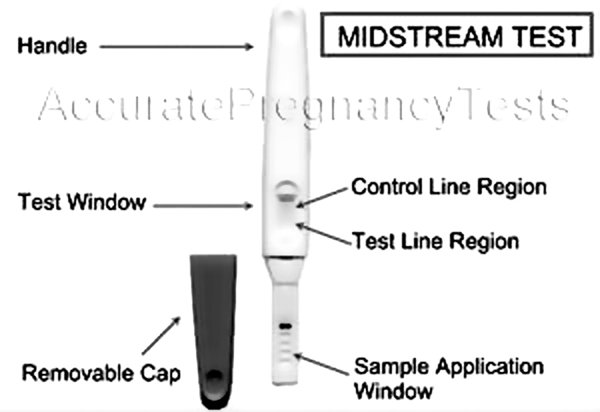

Baby track midstream test

DESCRIPCIÓN: Prueba para la detección de embarazo, basada en la búsqueda de gonadotropina coriónica humana en orina (GCH).
PRINCIPIO: La gonadotropina coriónica humana (GCH) es una hormona secretada por la placenta después de la fertilización del huevo. La GCH puede detectarse en la orina a partir de los 6 a 15 días después de la fecundación.
SEGURIDAD:
Alta sensibilidad: Esta prueba alcanza una sensibilidad de hasta 25 MUI/ml de GCH. Esto significa que puede detectar el embarazo hasta 3 días antes del día en que se esperaba la menstruación.
CONTROL DE CALIDAD: El dispositivo BABY TRACK MIDSTREAM TEST contiene una ventana de control para asegurarse de que la prueba fue realizada exitosamente.
Especificidad optimizada: BABY TRACK MIDSTREAM TEST está diseñado para ofrecer resultados seguros. BABY TRACK MIDSTREAM TEST es eficiente aun en presencia de algunos medicamentos o sustancias químicas.
Registro: 0484R2005 SSA
DATOS COMPLEMENTARIOS: Para mayores informes comunicarse a:
ACCUTRACK, S.A. DE C.V.
Teléfonos: (55) 5524-4481, 5524-2644, 5524-4575
e-mail: ventas@accutrack.com.mx
www.accutrack.com.mx